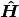
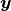
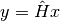

5.1. LinOp class¶
Cytnx provide a way for user to customize a linear operator with LinOp class.
Before dive into the LinOp class, let’s first take a look at a simple example:
In linear algebra, a linear operator can be think as a matrix  that operate on a vector , resulting as a output vector  as

If we consider to a matrix, this matrix-vector multiplication can be simply achieve using linalg.Dot. Let’s consider a vector with dimension 4, and matrix with shape (4,4) as
In python :
1 2 3 4 5 6 7 8 | x = cytnx.ones(4)
H = cytnx.arange(16).reshape(4,4)
y = cytnx.linalg.Dot(H,x)
print(x)
print(H)
print(y)
|
In c++:
1 2 3 4 5 6 7 8 | auto x = cytnx::ones(4);
auto H = cytnx.arange(16).reshape(4,4);
auto y = cytnx.linalg.Dot(H,x);
cout << x << endl;
cout << H << endl;
cout << y << endl;
|
Output>>
Total elem: 4
type : Double (Float64)
cytnx device: CPU
Shape : (4)
[1.00000e+00 1.00000e+00 1.00000e+00 1.00000e+00 ]
Total elem: 16
type : Double (Float64)
cytnx device: CPU
Shape : (4,4)
[[0.00000e+00 1.00000e+00 2.00000e+00 3.00000e+00 ]
[4.00000e+00 5.00000e+00 6.00000e+00 7.00000e+00 ]
[8.00000e+00 9.00000e+00 1.00000e+01 1.10000e+01 ]
[1.20000e+01 1.30000e+01 1.40000e+01 1.50000e+01 ]]
Total elem: 4
type : Double (Float64)
cytnx device: CPU
Shape : (4)
[2.40000e+01 2.80000e+01 3.20000e+01 3.60000e+01 ]
The above example consider a matrix that is small, with shape (4,4).
What if the matrix is very large but sparse?
Clearly using dense structure is not only very memory insufficient, but also post large computational cost as most of the elements are zero. One way to solve such problem is to use sparse representation with pre-defined sparse structure. Indeed, most of the linear algebra library does provide those standardized sparse data structure.
There is, however, a more general way to represent linear operator . Instead of think it as a matrix, and defines different internal data structure, we can think this linear operator as a function that maps the input vector to a output vector .
This is exactly what LinOp is designed to do. User can define the mapping operation from input to inside LinOp.
There are two ways we can define a linear operator: 1. Pass a callable function with proper signature to LinOp object. 2. Inherit the LinOp class, and overload the matvec member function.
Let’s consider a simple example of a operator that operate on a input vector with dimension 4 that interchange the 1st and 4th elements and add one to both the 2nd and 3rd elements. Then output a dim=4 vector .
5.1.1. Pass a function¶
The simplest way is to define a function and pass it into LinOp class.
First, let’s define the function:
In python:
1 2 3 4 5 6 | def myfunc(v):
out = v.clone()
out[0],out[3] = v[3], v[0] #swap
out[1]+=1 #add 1
out[2]+=1 #add 1
return out
|
In c++:
1 2 3 4 5 6 7 8 9 | using namespace cytnx;
Tensor myfunc(const Tensor &v){
Tensor out = v.clone();
out(0) = v(3); //swap
out(3) = v(0); //swap
out[1]+=1; //add 1
out[2]+=1; //add 1
return out;
}
|
Note
The function should have signature Tensor f(const Tensor &) with NO additional argument. Thus it is less flexible if additional arguments are required. In such case, See next section Inherit the LinOp class instead.
Next, we create a LinOp object, and pass this myfunc into it.
1 2 3 4 | H = cytnx.LinOp("mv",nx=4,\
dtype=cytnx.Type.Double,\
device=cytnx.Device.cpu,\
custom_f=myfunc)
|
In c++:
1 2 3 | auto H = LinOp("mv",4,Type.Double,
Device.cpu,
myfunc);
|
The meaning of the arguments are:
1 |
“mv” |
indicate matrix-vector multiplication |
2 |
nx=4 |
indicate the input dimension = 4 |
3 |
dtype=Type.Double |
indicate the data type of input/output vector of custom function |
4 |
device=Device.cpu |
indicate the device type of input/output vector of custom function |
5 |
custom_f=myfunc |
the custom funtion. |
Finally, we can use this object by calling LinOp.matvec:
In python:
1 2 3 4 | x = cytnx.arange(4)
y = H.matvec(x)
print(x)
print(y)
|
In c++:
1 2 3 4 | auto x = cytnx::arange(4);
auto y = H.matvec(x);
cout << x << endl;
cout << y << endl;
|
Output>>
Total elem: 4
type : Double (Float64)
cytnx device: CPU
Shape : (4)
[0.00000e+00 1.00000e+00 2.00000e+00 3.00000e+00 ]
Total elem: 4
type : Double (Float64)
cytnx device: CPU
Shape : (4)
[3.00000e+00 2.00000e+00 3.00000e+00 0.00000e+00 ]
5.1.2. Inherit the LinOp class¶
Cytnx also expose the interface LinOp.matvec, which provides more flexibility for users who want to include additional data/functions associate with the mapping. This can be achieve with inheritance of LinOp class.
Let’s demonstrate how to use this with the similar example. Again, we consider a operator that interchange the 1st and 4th elements. But this time, we want the 2nd and 3rd elements add with a constant as an external parameter.
First, let’s create a class that inherit LinOp object, with a class member AddConst.
In python:
1 2 3 4 5 6 7 8 9 10 11 12 13 | class MyOp(cytnx.LinOp):
AddConst = 1# class member.
def __init__(self,aconst):
# here, we fix nx=4, dtype=double on CPU,
# so the constructor only take external argument 'aconst'
## Remember to init the mother class.
## Here, we don't specify the custom_f!
LinOp.__init__(self,"mv",4,cytnx.Type.Double,\
cytnx.Device.cpu )
self.AddConst = aconst
|
In c++:
1 2 3 4 5 6 7 8 9 10 11 12 | using namespace cytnx;
class MyOp: public LinOp{
public:
double AddConst;
MyOp(double aconst):
LinOp("mv",4,Type.Double,Device.cpu){ //invoke base class constructor!
this->AddConst = aconst;
}
};
|
Next, the most important part is to overload the matvec member function, as it defines the mapping from input to output .
In python:
1 2 3 4 5 6 7 8 9 10 11 12 13 14 15 16 17 18 19 20 | class MyOp(cytnx.LinOp):
AddConst = 1# class member.
def __init__(self,aconst):
# here, we fix nx=4, dtype=double on CPU,
# so the constructor only take external argument 'aconst'
## Remember to init the mother class.
## Here, we don't specify the custom_f!
cytnx.LinOp.__init__(self,"mv",4,cytnx.Type.Double,\
cytnx.Device.cpu )
self.AddConst = aconst
def matvec(self, v):
out = v.clone()
out[0],out[3] = v[3],v[0] # swap
out[1]+=self.AddConst #add constant
out[2]+=self.AddConst #add constant
return out
|
In c++:
1 2 3 4 5 6 7 8 9 10 11 12 13 14 15 16 17 18 19 20 21 | using namespace cytnx;
class MyOp: public LinOp{
public:
double AddConst;
MyOp(double aconst):
LinOp("mv",4,Type.Double,Device.cpu){ //invoke base class constructor!
this->AddConst = aconst;
}
Tensor matvec(const Tensor& v) override{
auto out = v.clone();
out(0) = v(3); //swap
out(3) = v(0); //swap
out[1]+=this->AddConst; //add const
out[2]+=this->AddConst; //add const
return out;
}
};
|
Finally, the class can be simply used as following, here, we set the constant to add as 7.
In python:
1 2 3 4 5 6 | myop = MyOp(7)
x = cytnx.arange(4)
y = myop.matvec(x)
print(x)
print(y)
|
In c++:
1 2 3 4 5 6 | auto myop = MyOp(7);
auto x = cytnx::arange(4);
auto y = myop.matvec(x);
cout << x << endl;
cout << y << endl;
|
Output>>
Total elem: 4
type : Double (Float64)
cytnx device: CPU
Shape : (4)
[0.00000e+00 1.00000e+00 2.00000e+00 3.00000e+00 ]
Total elem: 4
type : Double (Float64)
cytnx device: CPU
Shape : (4)
[3.00000e+00 8.00000e+00 9.00000e+00 0.00000e+00 ]
5.1.3. Ex: make sparse data structure¶
With this flexibility, the user can actually define their own sparse data structure of an operator.
For example, if we want to define a sparse matrix with shape=(1000,1000) with ONLY two non-zero elements A[1,100]=4 and A[100,1]=7. other elements are zero, we don’t have to really define a dense tensor with size . We can simply use LinOp class as
In python:
1 2 3 4 5 6 7 8 9 10 11 12 13 14 15 16 17 18 19 20 21 22 23 24 25 26 | class Oper(cytnx.LinOp):
Loc = []
Val = []
def __init__(self):
cytnx.LinOp.__init__(self,"mv",1000)
self.Loc.append([1,100])
self.Val.append(4.)
self.Loc.append([100,1])
self.Val.append(7.)
def matvec(self,v):
out = cytnx.zeros(v.shape(),v.dtype(),v.device())
for i in range(len(self.Loc)):
out[self.Loc[i][0]] += v[self.Loc[i][1]]*self.Val[i]
return out
A = Oper();
x = cytnx.arange(1000)
y = A.matvec(x)
print(x[1].item(),x[100].item())
print(y[1].item(),y[100].item())
|
Output>>
1.0 100.0
400.0 7.0
Hint
Here, we use python API as example, but the same thing can be done with C++ API as well.
Next session, we will see how we can benefit from LinOp class by pass this object to Cytnx’s iteractive solver and solve for the eigen value problem with our custom Operator.